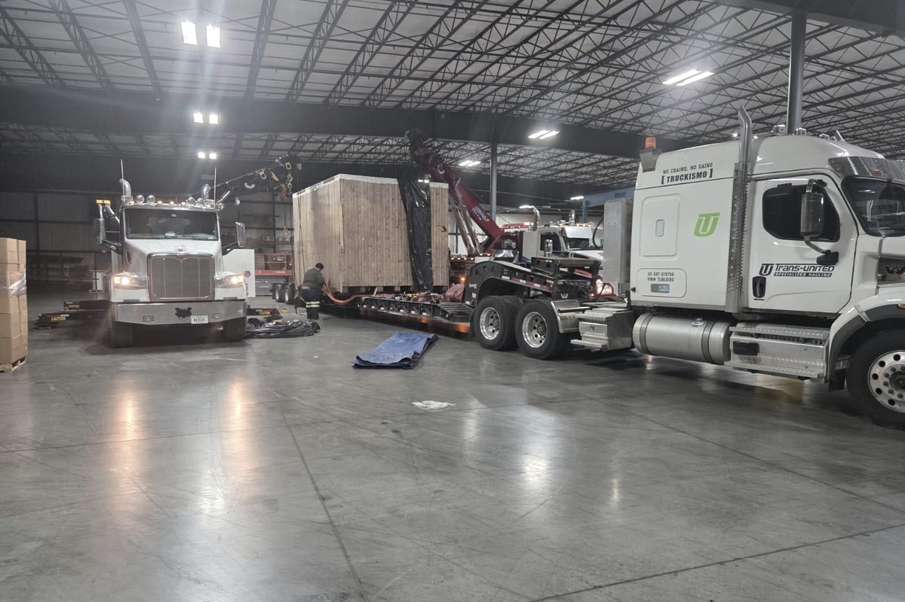

Weigh it and measure the lowered mast first. Warehouse electrics ride flatbeds or step decks and drive on at a dock; big pneumatics and container handlers need a lowboy, four-plus chains, and oversize/overweight permits once the load breaks 8'6" wide, 13'6" tall, or 80,000 lbs gross.
"Ship a forklift" covers everything from a three-wheel electric around 8,000 lbs to a container handler that outweighs the truck pulling it. Two numbers decide the whole move: service weight and lowered mast height. Get both off the data plate and a tape measure before you call anyone.
Weight class decides everything downstream
Warehouse electrics. Sit-down counterbalance units rated 3,000–6,000 lbs. Rule of thumb: a counterbalance forklift weighs roughly 1.5 to 2 times its rated capacity, and electrics run heavy for their size because the battery doubles as counterweight. Figure 8,000–12,000 lbs in a compact footprint. These are the easy ones.
IC pneumatics. Yard trucks with capacities from 5,000 lbs into the teens, service weights from the mid-teens up past 30,000 lbs. Wider stance, longer wheelbase, taller mast — every dimension starts working against you.
High-capacity machines and container handlers. Big pneumatics rated 30,000 lbs and up, empty-container handlers, reach stackers. This is heavy-haul freight that happens to have forks. Some exceed legal gross weight all by themselves and ship with the mast or spreader removed as a second piece.
Trailer choice: flatbed, step deck, or lowboy
Deck height is the whole game. Legal loaded height is 13'6", so the trailer decides how much machine fits under it:
- Flatbed — deck sits about five feet up, leaving roughly 8'6" of freight height. Handles most warehouse electrics with the mast lowered. Needs a dock or rated ramps to load.
- Step deck — main deck around 3'6", buying close to ten feet of height. The default for mid-size pneumatics and any mast that won't clear on a flatbed.
- Lowboy/RGN — well height 18–24", detachable gooseneck so a running machine drives on at ground level. This is where the heavy pneumatics and handlers live, on as many axles as the scale math demands.
Full comparison in Flatbed vs Step Deck vs RGN.

Drives on, or gets picked
Running machine on an RGN: drive it on. Running machine on a flatbed or step deck: dock-load it or use ramps rated for the weight — and watch the breakover angle, because low-clearance electrics will high-center on a steep ramp. Dead machine, or no dock and no ramps: it gets craned or lifted by a bigger forklift, off the designated lift points, with a spreader bar keeping the rigging off the overhead guard.
Handle the mast before it handles you
Measure the lowered mast height with the carriage all the way down — on the actual machine, not from a brochure. The mast rides tilted full back, carriage down. On big machines the mast comes off entirely and ships flat next to the chassis; container handlers usually move with the spreader pulled. Nobody eats a bridge strike over a forklift.
Securement: chains, four points, forks flat
Federal cargo securement rules treat wheeled machinery over 10,000 lbs as its own category: minimum four tie-downs on the machine's designated securement points, with combined working load limit of at least half the machine's weight. Chains and binders on the frame points — not straps. Forks come down flat to the deck and get chained, or come off and ship secured separately. LP tank off or valve closed, battery disconnected on electrics, parking brake set. Same discipline we run on every machine — see How to Ship Industrial Machinery on a Flatbed.
Drivable or dead — say it up front
A running forklift loads in fifteen minutes. A dead one changes the entire equipment order: winch trailer, tilt deck, or a crane on both ends. Tell dispatch the truth when you book. "It ran last month" gets you a standard step deck and a machine that won't move onto it.
Permits for the big ones
The legal envelope in most states: 8'6" wide, 13'6" loaded height, 80,000 lbs gross combined. Warehouse electrics never touch those numbers. Big pneumatics can push width past 8'6" across the drive tires, and container handlers blow through the weight ceiling before the trailer even enters the math. Break any threshold and it's oversize/overweight permits in every state on the route, sometimes escorts on the wide ones. That's routing and paperwork we coordinate as part of Heavy Haul Transport — build it into the timeline, because permits don't issue at midnight.
Bottom line
- Service weight plus lowered mast height equals trailer choice. Get both before booking.
- Warehouse electric: flatbed or step deck. Big pneumatic: step deck or lowboy. Container handler: multi-axle lowboy and a permit file.
- Four chains minimum on the frame points; forks flat on the deck or off the machine.
- Declare dead machines up front — wrong equipment is the most common forklift-shipping failure.
- Over 8'6" wide, 13'6" tall, or 80,000 lbs gross means permits in every state on the route.
We coordinate forklift moves weekly, from a single warehouse electric to machines that need their own engineering review — it's core Machinery Moving work. Get a Quote and have a photo of the data plate ready.